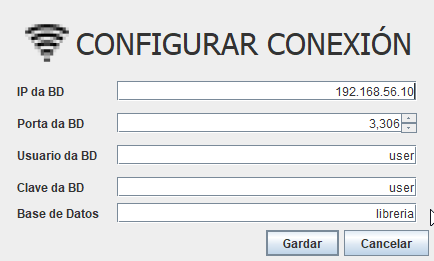

CONFIGURACION DA CONEXION

BOTONES
-
Restablecer Datos :Restablece todos os datos por defecto gardados na aplicacion.
-
Gardar: Garda no fichero de propiedades os datos escritos no formulario.
-
Cancelar: Pecha esta ventana sen gardar ningun cambio feito.